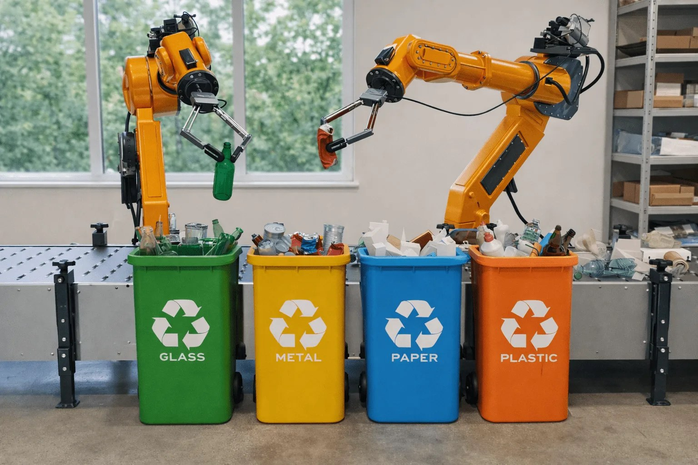
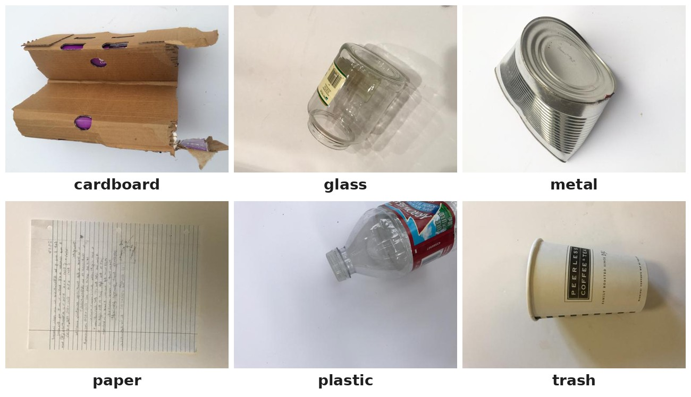

Clasificación de residuos con TrashNet#
Proyecto final de Deep Learning · Universidad del Norte · Noviembre de 2026
Autores: Anyely Sanjuan Benavides y Juan David Díaz Fernández · Profesor: Dr. Lihki Rubio


Fig. 1 Separación robótica de residuos por material. Imagen tomada de National High School Journal of Science (2026), «Robotic waste sorting system using machine learning classification techniques».#
Descripción del proyecto#
Este libro documenta la clasificación automática de imágenes de residuos sólidos en seis clases de material (cartón, vidrio, metal, papel, plástico y rechazo) con el conjunto de datos TrashNet. La clasificación por material es la tarea de percepción de los sistemas automáticos de separación de residuos, y su calidad depende de la evidencia que respalda la arquitectura elegida.
Comparamos tres modelos base de Deep Learning, todos entrenados desde cero con el mismo protocolo: una red convolucional estilo VGG reducida, MobileNetV2 y ResNet-18. Entrenamos cada uno con 8 semillas sobre una partición estratificada y agrupada por casi-duplicados, evaluamos con F1 macro y comparamos los modelos con pruebas estadísticas pareadas. ResNet-18 obtiene el mayor F1 macro en prueba (0.863 ± 0.022) y queda como modelo de referencia que cualquier modelo posterior debe superar.


Fig. 2 Una imagen de cada una de las seis clases de TrashNet (Thung, 2017).#
Contenido#
- 1. Definición del problema y conjunto de datos
- 2. Análisis exploratorio de datos
- 3. Revisión del estado del arte y selección de los modelos base
- 4.1 Diseño experimental
- 4.2 Partición y preprocesamiento
- 4.3 Búsqueda de hiperparámetros
- 4.4 Estudio piloto y tamaño de muestra
- 4.5 Entrenamiento final
- 5.1 Resultados de los modelos base
- 5.2 Comparación estadística y modelo de referencia
- 5.3 Análisis cualitativo, robustez y discusión
- 6. Declaración a priori
- 7. Conclusiones
Uso de inteligencia artificial#
Para elaborar este trabajo usamos herramientas de inteligencia artificial (Claude, de Anthropic) como apoyo en la programación, el análisis de datos y la redacción. Los autores revisamos, verificamos y aprobamos todo el contenido, y asumimos la responsabilidad por él.
Referencia#
Thung, G. (2017). trashnet [Conjunto de datos y código fuente]. GitHub. garythung/trashnet